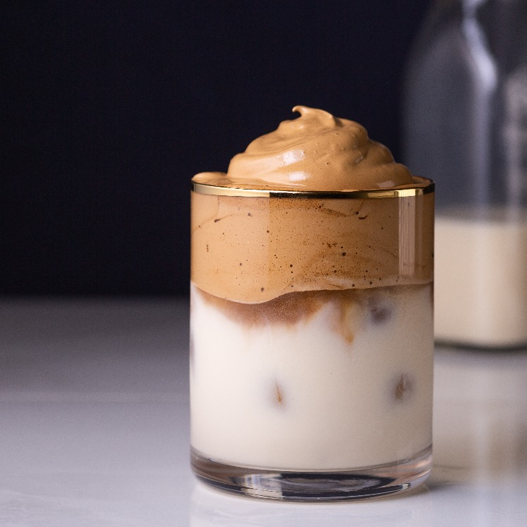
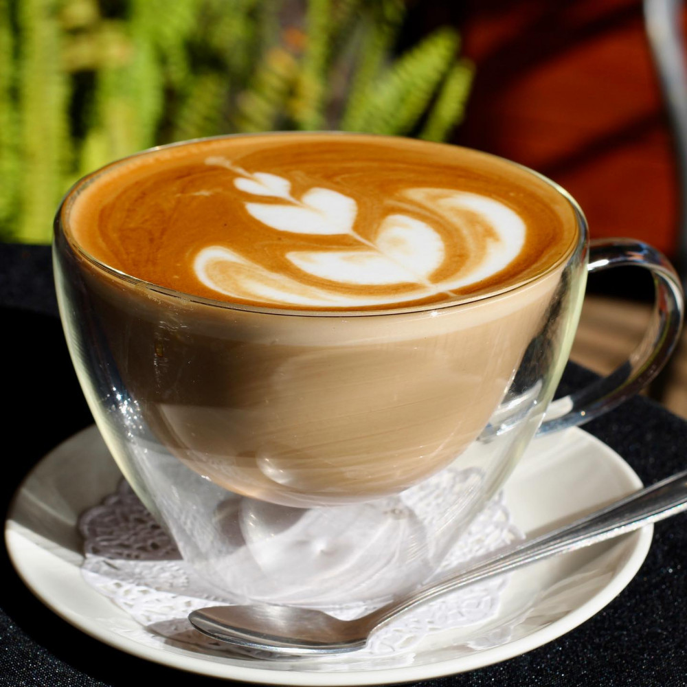
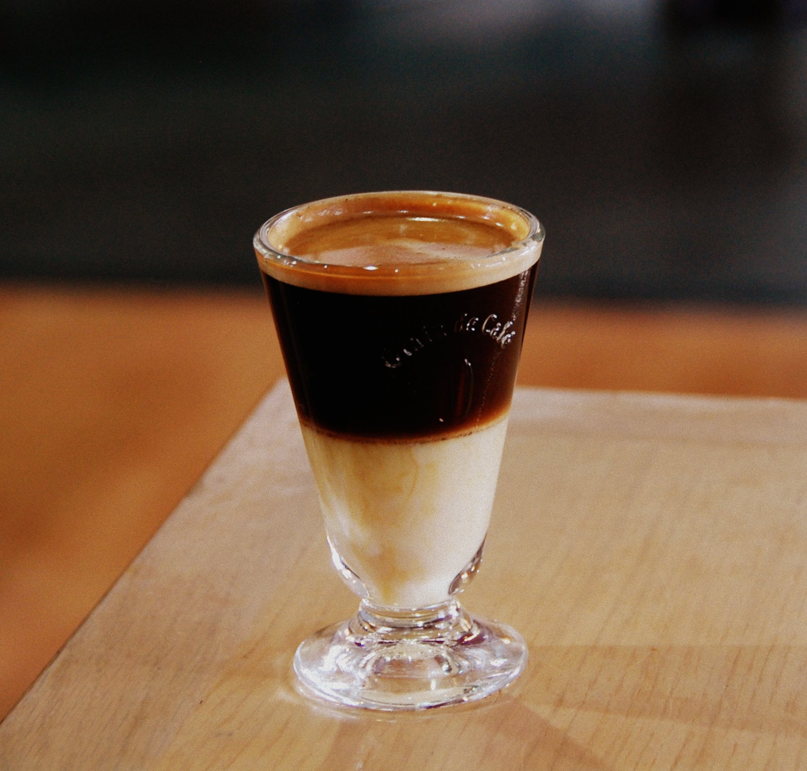

3 Deliciosas Recetas De Café
A todos nos gusta el café, y es que siempre esperaos el momento oportuno para prepararnos otra taza de café, pero ya sea que te guste el café frío o caliente, éstas recetas para café te encantaran, por su manera fácil de preparar y su delicioso resultado. Quedarás como un buen anfitrión al preparar estas recetas para tus amigos.
whipped coffee.
Ingredientes:
- 2 Cucharadas de café soluble.
- 2 Cucharadas de azúcar.
- 2 Cucharadas de agua caliente.
- 1 taza de leche.
- Hielo.
Preparación:
- Agraga las 2 cucharadas de café, 2 de azúcar y 2 de agua en un tazón.
- Bate hasta lograr una consistrencia espesa color beige.
- En un vaso agrega hielo y añade leche hasta ¾ partes de su capacidad.
- añade el café batido sobre la leche y ¡disfruta!
Café Cortado.
Ingredientes:
- 7 Gramos de café molido o cápsulas de café expreso.
- Agua caliente.
- 2 Cucharadas de agua caliente.
- ½ lata de leche evaporada caliente.
Preparación:
- Prepara tu café como de costumbre.
- Coloca en una taza la leche evaporada, puede ser un poco o hasta el 50% de tu taza.
- Agrega el café recién preparado y ¡disfruta!
- Puede ser acompañado por galletas o cualquier postre a elección.
Café Bombón o Biberón
Ingredientes:
- 2 o 3 Cucharadas de café expreso soluble.
- Cacao o canela.
- Leche Condensada.
- Nata montada o espuma de leche.
Preparación:
- En un vaso de cristal coloca una base de leche Condensada a gusto, considera que mientras más coloques más dulce quedará.
- con cuidado coloca el café, sin llegar al borde de la taza.
- Añade la nata montada o la espuma de leche a gusto.
- Decora con un poco de cacao o canela y ¡disfruta!